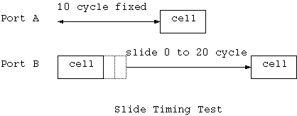

This test picks two ports (with i and j loop) and sends two cells
from those ports with various timing relation (with k loop).

1: pattern[15:12] = 4'b0001 ;
2: pattern[15:12] = 4'b0010 ;
3: pattern[15:12] = 4'b0100 ;
4: pattern[15:12] = 4'b1000 ;
5: pattern[15:12] = 4'b0011 ;
6: pattern[15:12] = 4'b0110 ;
7: pattern[15:12] = 4'b1100 ;
8: pattern[15:12] = 4'b0101 ;
9: pattern[15:12] = 4'b1010 ;
10: pattern[15:12] = 4'b1001 ;
11: pattern[15:12] = 4'b0111 ;
12: pattern[15:12] = 4'b1011 ;
13: pattern[15:12] = 4'b1101 ;
14: pattern[15:12] = 4'b1110 ;
15: pattern[15:12] = 4'b1111 ;
Thus, this simple test loop exhaustively checks all the combinations of two ports, -10 to 10 cycle timing difference, and all the possible output ports include multiple outputs.
// send 200 cells
back to back with entry 15 which send 4 cells to all
// the
output ports
for( i = 0 ;
i < 200 ; i++ ) {
fork
tester.send_cell( 0, 0, 15 ) ;
tester.send_cell( 0, 1, 15 ) ;
tester.send_cell( 0, 2, 15 ) ;
tester.send_cell( 0, 3, 15 ) ;
join
}
Then it sends 4 cells from each port, which will be transferred to one of the port respectively. The test waits the completion of the transfer of each 4 cells.
// send 4 sells
one by one but each cell will stay more than 100 cycle
for( i = 0 ;
i < 20 ; i++ ) {
for(
j = 0 ; j < 4 ; j++ ) {
fork
tester.send_cell( 0, 0, 1 ) ;
tester.send_cell( 0, 1, 2 ) ;
tester.send_cell( 0, 2, 3 ) ;
tester.send_cell( 0, 3, 4 ) ;
join
}
//
now wait for the completion, before another try
tester.wait_done()
;
}
int gen_error() {
int x ;
x = random() ;
// 50% probability
of error
if( x & 8
) return 0 ;
else return 1
;
}
void errorcell_test1()
{
int i ;
// send 200 sells
with some with hec error
for( i = 0 ;
i < 200 ; i++ ) {
fork
tester.send_cell( 0, 0, 1, gen_error() ) ;
tester.send_cell( 0, 1, 2, gen_error() ) ;
tester.send_cell( 0, 2, 3, gen_error() ) ;
tester.send_cell( 0, 3, 4, gen_error() ) ;
join
}
}
// send 500 sells
with transfer out to all 4 output port.
// due to unfair
arbitration, input port 1,2,3 will cause a starvation.
for( i = 0 ;
i < 500 ; i++ ) {
fork
tester.send_cell( 0, 0, 15 ) ;
tester.send_cell( 0, 1, 15 ) ;
tester.send_cell( 0, 2, 15 ) ;
tester.send_cell( 0, 3, 15 ) ;
knife
}